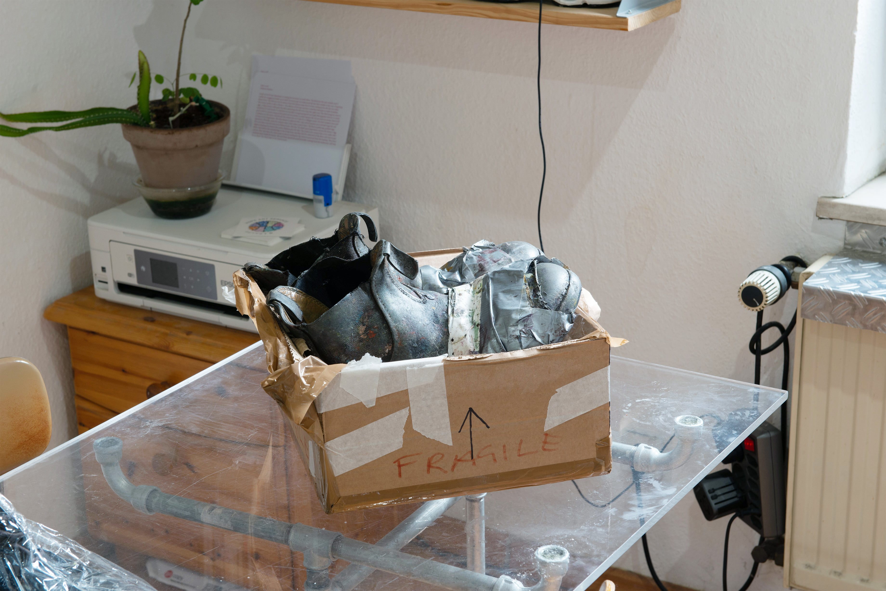

Curated by Ida Tomminem
Cafe Weidinger Kegelbahn / Old bowling hall 10.12. 2025 Vienna
Krišjānis Beļavskis Johanna Sandels Lauma Muižarāja Katrīna Čemme Amy Dayan Ndiaye Ozawa Ei Elias Feil Elza Grono Leandramaus Konstantin Leitner Stella Oort Nico Pistec Esther Stern Ida Tomminen Marcus Wagner
Temporary exhibition with temporary works.
